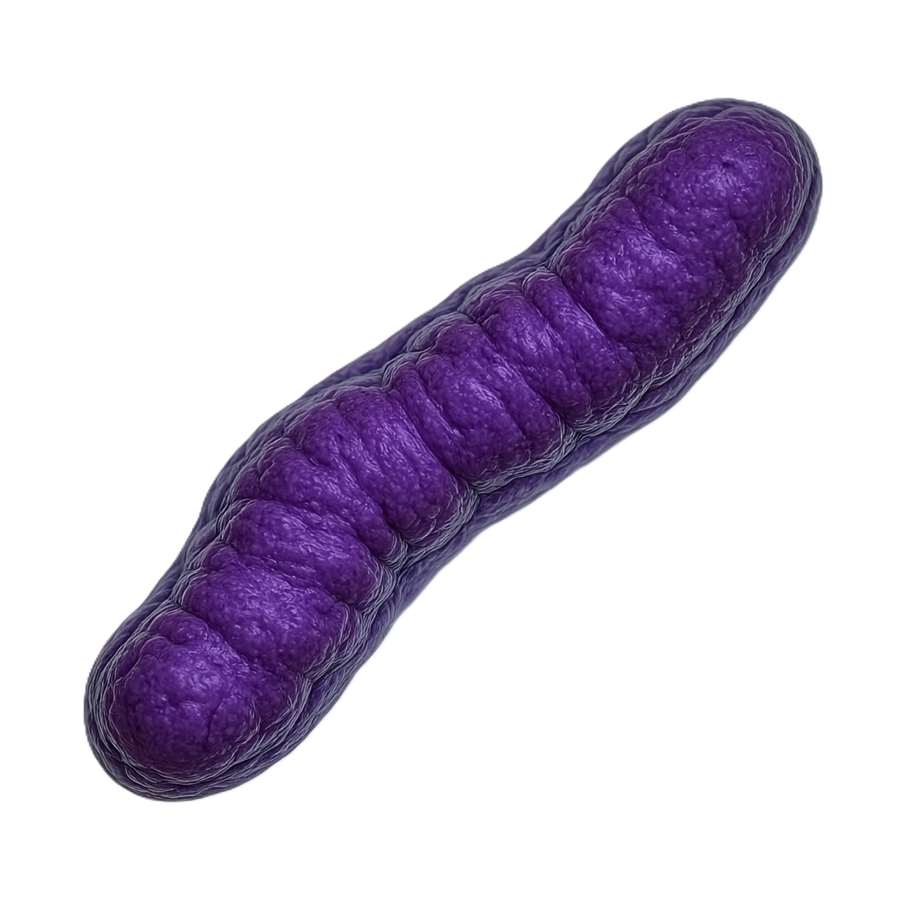
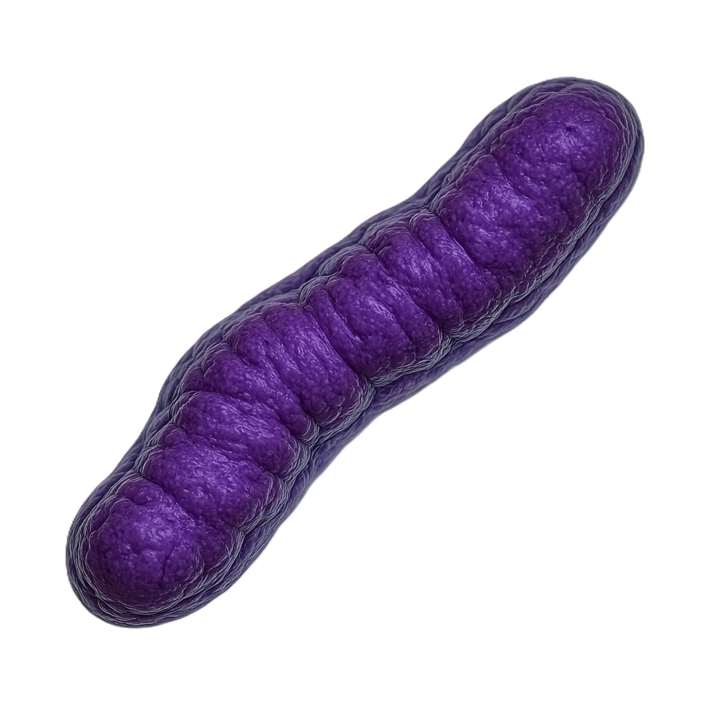

Descripción microbiológica
Bacillus subtilis es un bacilo grampositivo recto (0.7-1.2 µm × 2-4 µm), aerobio estricto, aunque puede crender en condiciones anaerobias facultativas con nitrato. Forma endosporas ovaladas centrales o subterminales que resisten condiciones extremas. Es móvil por flagelos perítricos y produce proteasas/amilasas extracelulares. En agar nutritivo forma colonias opacas, rugosas o mucoides (según cepa), de color crema a marrón claro. No es patógeno humano y es ampliamente usado como modelo de estudio bacteriano.
Características distintivas
- Tinción: Gram-positivo (variable en cultivos viejos), esporulado.
- Metabolismo: Catalasa-positivo, oxida glucosa sin gas, reduce nitratos.
- Resistencias: Esporas soportan 80°C durante 30 minutos y radiación UV.
- Factores clave: Competencia natural para transformación genética, producción de antibióticos (ej. subtilisina).
Ecología y hábitat
Ubicua en suelos (106-107 UFC/g), especialmente en rizosfera de plantas. Las esporas permiten supervivencia en ambientes áridos, con pH 4.5-8.5 y temperaturas de -5°C a 55°C. Interactúa con raíces vegetales promoviendo crecimiento (PGPR) mediante producción de fitohormonas. Coloniza superficies formando biofilms estructurados con matriz de exopolisacáridos y tasA. Compite con patógenos por nichos e inhibe su crecimiento mediante antibióticos.
Factores ambientales
- Supervivencia: Esporas viables >100 años en condiciones secas.
- Crecimiento óptimo: 30-37°C, pH neutro (6.5-7.5).
- Biocidas: Esporas resisten etanol al 70%, pero son sensibles a glutaraldehído al 2%.
Mecanismos de adaptación
Estrategias para persistencia ambiental:
| Proceso | Mecanismo | Regulación |
|---|---|---|
| Esporulación | Formación de endospora con dipicolinato de Ca2+ | Cascada Spo0A-σ factores |
| Competencia | Captación de ADN exógeno (transformación natural) | ComK/ComP-ComA |
| Antibiosis | Síntesis de lipopéptidos (surfactina, iturina) | Quorum sensing (ComX) |
Aplicaciones biotecnológicas
- Industria enzimática: Producción de amilasas (detergentes), proteasas (alimentos) y celulasas (biocombustibles).
- Agricultura: Biofertilizante y biocontrol (ej. cepa QST713 contra Botrytis).
- Biorremediación: Degradación de hidrocarburos y metales pesados (Cr6+ → Cr3+).
- Modelo científico: Estudios de esporulación, biofilms y evolución bacteriana.
Cultivo e identificación
Métodos estándar:
- Tinción de esporas (verde malachita/rojo safranina) y tinción de Gram.
- Cultivo en agar nutritivo + prueba de catalasa/oxidasa.
- PCR para genes spo0A (esporulación) o srfAA (surfactina).
Condiciones de producción industrial:
- Fermentación: Biorreactores a 37°C, pH 7.0, alta aireación.
- Downstream: Liofilización de esporas para formulaciones comerciales.
Datos relevantes
- Genoma secuenciado: 4.2 Mbp (cepa 168), con ~4,100 genes codificantes.
- Produce >5% de enzimas industriales globales (mercado >USD 500 millones/año).
- Primer organismo en probar supervivencia en el espacio exterior (experimento EXPOSE-E).